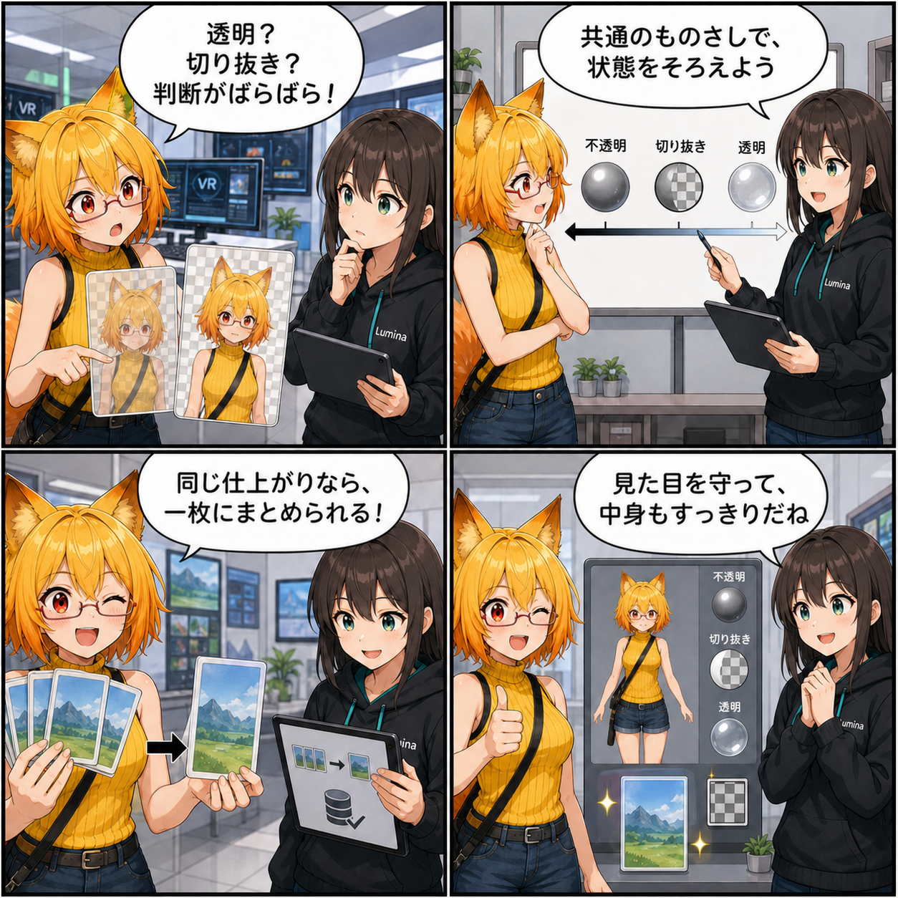

透け方はひとつ、画像もひとつ。材質変換のものさしをそろえた日
2026-08-07 の開発日記では、VAB 4.5へ材質を書き出すときとViewerで復元するときに、透明・切り抜き・不透明を同じ規則で扱うための更新を取り上げます。同じ結果になるテクスチャの重複も減らし、見た目の再現とデータの整理を一緒に進めた一日です。

集計期間には1コミットが入り、集計終了時点の最終HEADは c4bdd53（「Material変換の共通化とTexture重複排除を実装」）でした。変更規模は12ファイル、1,174行追加、46行削除です。確認時点のViewer作業ツリーはクリーンでした。
今日の主題：書き出しと復元で、材質の判断をそろえる
アバターの材質には、不透明、輪郭をくっきり抜く切り抜き、向こう側が透ける透明といった描き方があります。同じ材質でも、シェーダー名、RenderTypeタグ、描画順、ブレンド方法、深度書き込みなど複数の情報が関係するため、変換する場所ごとに判断がずれると見た目も変わってしまいます。
今回、これらを一つの共通状態へ正規化する仕組みが追加されました。ConverterでVAB 4.5を書き出すとき、実行時Writerで保存するとき、Viewerで読み戻すときが、同じ規則を使って透明・切り抜き・不透明を扱います。
透明、切り抜き、不透明を同じ規則へ
共通化された判定は、材質のRenderTypeだけに頼りません。lilToonの透明モード、描画順、色とアルファのブレンド係数、深度書き込みも合わせて表面の種類を決めます。その結果からRenderType、描画順、ブレンド、深度書き込み、Alpha-to-Coverageを整え、URPで復元するときはSurfaceとAlpha Clip、関連キーワードにも反映します。
たとえば透明材質では深度書き込みとAlpha-to-Coverageを無効にし、不透明材質では標準のブレンドと深度書き込みへ戻すことがテストされています。lilToonのシェーダータグが切り抜きを示していても、明示された透明モードを優先するケースも固定されました。
同じ最終画像は、重ねて持たない
テクスチャ変換には「どの元画像を、どの用途・色空間・サンプラー設定・加工方法で仕上げるか」という変換レシピのキャッシュが追加されました。同じレシピなら再エンコードを避け、元のMaterial Slotが別でも、最終PNGが同じならSource Imageを共有します。さらに最終画素とSampler・用途の条件まで同じならTexture Viewも一つへまとめます。
参照されなくなった画像やTexture Viewは書き出し前に整理されます。アルファマスクは色データではなく値として扱うためLinear色空間かつミップマップなしとし、CPUでリサイズした場合も色の違いとアルファが残ることを回帰テストで確認しています。
変換結果を追いやすくする診断情報
材質スロットにはRendererの階層パスが記録され、テクスチャには元画像のハッシュ、変換レシピのハッシュ、加工内容などの診断情報が加わりました。最適化レポートでは、レシピキャッシュのヒット数や重複排除前後のサイズなどを追える土台も整っています。
これは画面に直接現れる新機能ではありませんが、「どの材質の、どのテクスチャが、なぜその形で保存されたか」を調べやすくします。変換品質を上げながら、問題が起きたときの手掛かりも残す更新です。
ほかにも進んだこと
実行時のVAB 4.5 Writerにも共通判定が導入され、保存された材質をViewerへ適用する経路でも同じ正規状態を再適用するようになりました。Converterだけを直すのではなく、書き出しと読み戻しの両側をそろえたことが今回のポイントです。
新しいテストでは、透明・不透明の正規化、アルファマスクの色空間とミップマップ、CPUリサイズ時の画素とアルファ保持、複数Material Slotをまたぐ最終テクスチャの共有を確認しています。
4コマの裏話
4コマでは、同じ見た目のはずなのに「透明？ 切り抜き？」と変換経路ごとに判断が揺れる場面から始めます。ルミナが共通のものさしを示し、ろひが重複したテクスチャを一枚へ整理。最後は見た目を守りながら中身もすっきりする流れです。
今日のまとめ
2026-08-07の記事対象期間では、VAB 4.5の材質変換に共通の正規化規則が入り、透明・切り抜き・不透明の判断と復元が一貫するようになりました。テクスチャも変換レシピと最終結果を基準に共有され、不要な重複を減らす仕組みが加わっています。
見た目の忠実さとファイル内部の効率は、別々の課題に見えて実はつながっています。何を同じものとして扱い、何を違うものとして残すか。その判断を一か所へ集めたことで、変換は分かりやすく、検証しやすくなりました。
本日のひとこと
ものさしをそろえると、見た目も中身も迷わない。